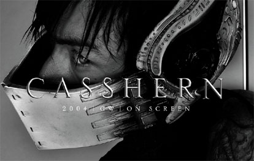
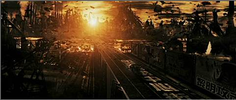
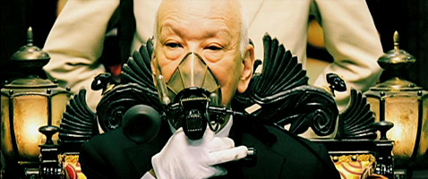
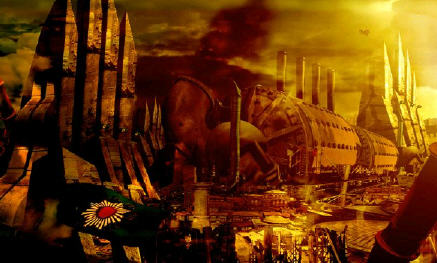
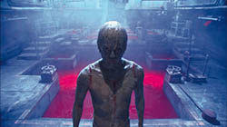
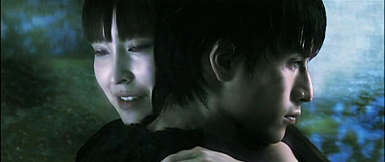
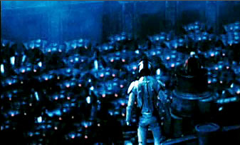

Movie review by : SFAM
Year : 2004
Directed by : Kazuaki Kiriya
Written by : Kazuaki Kiriya et al.
Degree of Cyberpunk visuals : Very High
Correlation to Cyberpunk themes : High
Rating : 8/10

Overview: Like Immortel and Sky Captain, Casshern was one of the first movies filmed entirely on Blue or Green Screen. Casshern is by far the most ambitious of the three movies in terms of story complexity, symbols and messages conveyed, and in the scope of experimentation with visual effects. Unlike Sky Captain, this is NOT a feel-good Raiders-like fun romp. And unlike Immortel, which is also complex in scope, Casshern largely meets its intent from a story perspective. While Casshern is philosophically dense (I haven't seen the anime yet, is it philosophically dense as well?), it does have some terrific action sequences. One of the best samurai sword duels I've seen happens here, as does some terrific robot vs. human fights. With its hard rock accompaniment, the action is almost matrix-like in quality.

Casshern takes place in a very mechanized dystopian alternate future, in which the forces of Europa and the Greater Eastern Federation have been fighting a 50 year war for dominance. The Greater Eastern Federation has finally established control over the Eurasian continent, and now has to deal with the horrid side-effects the endless years of a chemical, biological, and nuclear war. The earth's environment is in shambles, most of civilization has been wiped out and people usually wear protective masks when venturing outside.

Its in this environment that Dr. Azuma, a genetic scientist, comes up with a solution to the maladies. He says he has discovered special "neo-cells" that can regenerate human tissue, and in effect, can create "replaceable parts" for the human body. An aging General with serious health problems jumps on this solution and sets Dr. Azuma up with a lab funded by the military. Casshern centers around the life of Dr. Azuma's son Tetsuya, who in rebelling, decides to join the army. Unfortunately, he finds out that war is truly hell, and eventually ends up dying. His ghost comes back to say goodbye to his mother and fiancee, but things don't go as planned. Unfortunately, Dr. Azuma's research is not going very well. To extract more "Neo-cells", the military ends up engaging in ethnic cleansing of the oldest part of Eurasia - sector 7. They bring back the body parts for the good doctor to use in extracting the Neo-cells.

We find, however, that Sector 7 is inhabited by an ethnic group who were devout followers of a Gaurdian Spirit called Casshern. Casshern decides to make his presence felt and sends his lightning bolt down from the heavens, right into Dr. Azuma's lab, and gives the Neo-cell "pool" the ability to bring the dead body parts back to life. After massive amounts of zombie-like people (later referred to as neo-sapiens) emerge from the pool (sparking the military to go all out in killing them), Dr. Azuma gets the idea that if he places his son Tetsuya in the pool, he will come back to life as well. This works, and Tetsuya gets reborn, but as a faster, stronger version of himself, just like the newly formed "neo-sapiens."

After the military hunts down and kills virtually all of the neo-sapiens, the few remaining Neo-sapiens escape to Sector 7, and after a cry for help, their prayers are answered when the Gaurdian Casshern sends them down an ancient stronghold, completely with robot warrior making capabilities. The rest of the movie involves the ongoing conflict between the Neo-sapiens and the Greater Eastern Federation, and the role that Tetsuya (who later takes the name Casshern when defending the local people) and his family plays in it. There is also a really nice love story that takes place between Tutsuya and Luna. They apparently have been fated for one another since birth, and will continue to be together throughout time.

The Visuals: Casshern has some of the most astounding visuals on film. More impressive is the use of various color palettes and textures to represent various themes in the movie. Death is represented by streaking white aura around a person; war is represented in a black and white pixilated look; Impending doom is represented in yellow; green represents life; the Neo-sapiens have the dark blue and bright red colors, etc. Truly, the diversity in visual effects is the strong highpoint of the movie. Also, I found the choice of music accompaniment consistently terrific. The choices really add to the mood. Combined with the astounding visuals, we really get a tour-de-force type "blow you away" affect. . Casshern is also heavily laden with symbols and philosophical meaning. In addition to having a strong antiwar and anti-technology message, Casshern gives us interesting religious musings, and some thoughts on implications for cheating death, and a pretty powerful message for the need for co-existence with others. Most interestingly, Casshern is able to show pain and suffering on the individual "little person" level, and show how this affects the large scale picture.

Overview: While difficult to understand, Casshern is simply an awesome picture that will develop a huge following over the years. Take the time to understand this, and you should love it. It is NOT a happy picture though, and is very emotional in tone.